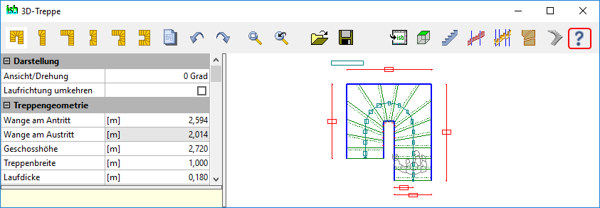

")

Das Programm 3D-Treppe kann sowohl als integraler Bestandteil von ISBCAD als auch als Standalone-Software genutzt werden. Es erleichtert dem Anwender die Konstruktionen von harmonischen Treppen. Dabei kann zwischen einer automatischen oder manuellen Verziehung gewählt werden.
Die Ausgabe der optionalen Draufsicht, Wangenabwicklungen, Schnitte und isometrische Ansicht erfolgt entweder direkt in ISBCAD oder als DXF/DWG-Datei.
Klicken Sie auf , um eine ausführliche Programmbeschreibung im PDF-Format aufzurufen.
 |